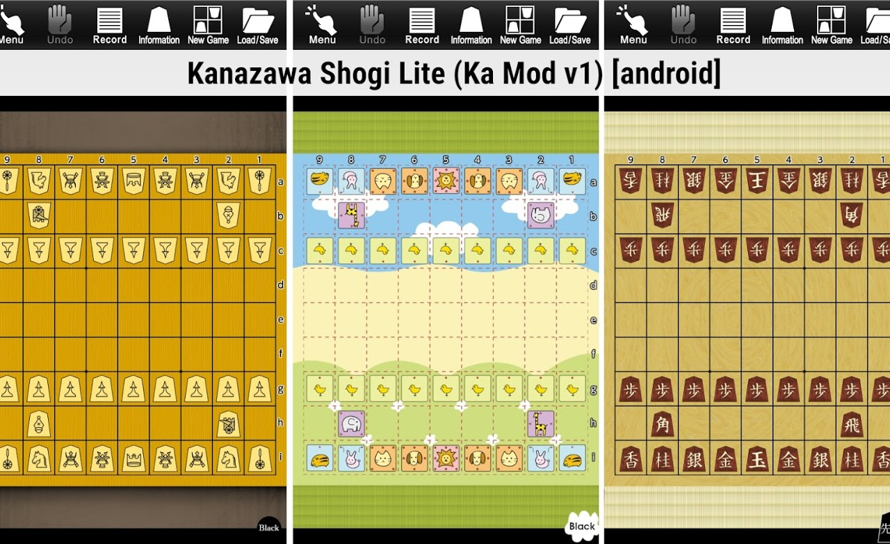
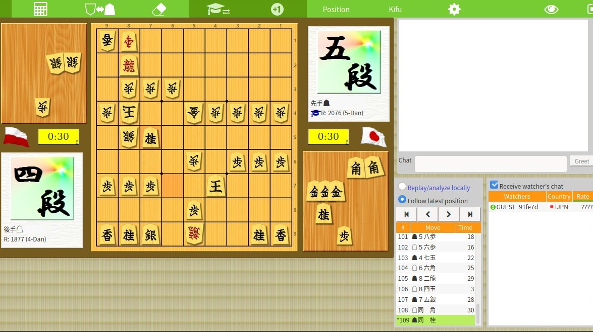
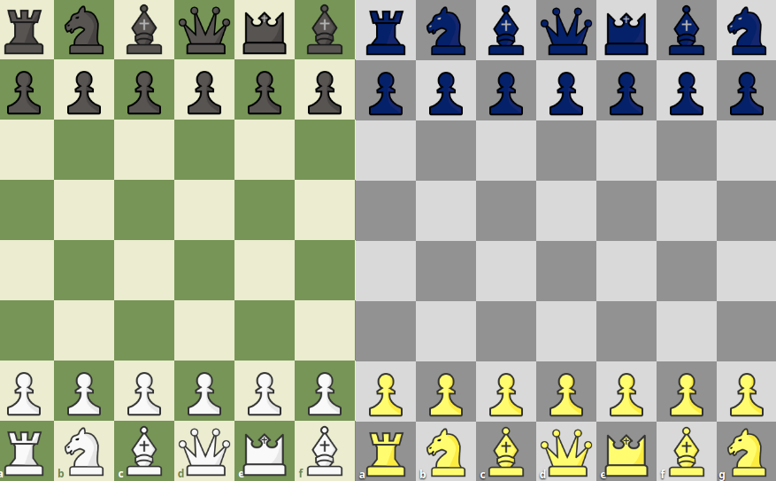

A Shogi (magyar átírásban Sógi) lényegében a japán sakk, mely sok dologban hasonlít a nyugati sakkhoz, azonban szerintem annál komplexebb és izgalmasabb, ami elsősorban a behozási szabálynak (drop rule) köszönhető. A szabályok kitárgyalása felesleges lenne itt, hiszen van róla remek magyar és angol nyelvű Wikipédia szócikk is. Az alábbiakban shogival kapcsolatos tartalmakat teszek közzé (melyek egy része általam gyártott vagy módosított tartalom).
Kanazawa Shogi Lite Ka Mod v1.1
 A Kanazawa Shogi Lite általam módosított változata, az alábbi módosításokkal:- Az első egy kanjis szett cserélve a kanji light 3D OTB elnevezésűre (v1.1-től)
- Bekerült a nemzetközi bábus szett (ezzel indul alapból).
- Bekerült a Doubutsu állatkás szett. (A normál 9x9-es Shogi tábla esetében Doubutsu Shogi in the Greenwood néven fut angolul, lásd: https://en.wikipedia.org/wiki/D%C5%8Dbutsu_sh%C5%8Dgi#Variation)
- Bekerült az általam készített "Red Wood" névre hallgató egy kanjis szett, de sajnos alapból nem elérhető, egyszer nyeri kell a gép ellen, hogy választható legyen.
- Főmenü és néhány grafikai elem cserélve lett.
- Új ikont kapott.
- Angol fordítás (a menükben) rövidítve/javítva lett pár helyen.
Letöltés: https://www38.zippyshare.com/v/R6HrQAnE/file.html vagy https://dropapk.to/bvhym7yb3x2y/Kanazawa_Shogi_Lite_(Ka_mod_v1.1).apk
Shogi cheatsheet
A4-es méretű cheatsheet (súgólap) kezdő játékosoknak, akik még nem tanulták meg a bábuk mozgását. Angol neveket és a magyar neveket használó PDF-ekben is elkészítettem őket. Nyomtathatók vagy telefonra/tabletre is feltehetők. Megtekintés/letöltés:
- https://pdfhost.io/v/4eAxGYXh_sogi_lepesek_sugolap_A4L_v2pdf.pdf
- https://pdfhost.io/v/6lQsiW2+_shogi_moves_cheatsheet_A4L_v2pdf.pdf
- https://pdfhost.io/v/IUrd7ChB_shogi_moves_cheatsheet_A4L_v3pdf.pdf
Shogi bábukészletek (Piece sets)
Az általam készített vagy módosított készleteket a Githubon teszem közzé: https://github.com/Ka-hu/shogi-pieces
Direkt link a zip fájl letöltéséhez: https://github.com/Ka-hu/shogi-pieces/archive/master.zip

Linkgyűjtemény
Online játék
- Pychess-Variants: Gép (AI) és emberek ellen is lehet játszani shogit és sok más sakkvariánst.
- 81Dojo: Talán a legnépszerűbb (és legjobb) online Shogi oldal, de nem biztos, hogy abszolút kezdőknek ajánlott. Regisztráció nélkül is kipróbálható, viszont gép (AI) ellen nem lehet játszani.
- PlayOK: online játékszobák, csak élő ellenfél ellen lehet játszani, azaz gép (AI) ellen nem. (Egyébként sok más táblajáték is játszható náluk, a főoldalon vannak listázva).
- Japanesechess.org: Egy egyszerű kis, extrák nélküli Shogi oldal, ahol gép (AI) ellen lehet játszani.
- Shogi Playground Live: regisztráció nélkül tudsz játszani másokkal. Csak beírod a neved, kapsz egy linket, azt küldd el annak, akivel játszani szeretnél, illetve nyisd meg te is a linket és már játszhattok is. Ennek az oldalnak a másik része a Shogi Playground, ahol játszmákat lehet elemezni, illetve megosztani másokkal. Vagy akár egy gépen, helyileg is lehet játszani.
Android
- Kanazawa Shogi Lite: Offline, gép ellen is játszható. ➝ Ennek a módosított változatát megtalálod itt az oldalamon, amelybe bekerültek a nemzetközi bábuk is (kezdőknek talán ideálisabb).
- Kanazawa Shogi 2: Offline, gép ellen is játszható, de fizetős.
- 81Dojo: Csak online játszható, gép ellen nem.
Linux
- XBoard + Shokidoki engine a gép elleni játékhoz: 64bit, 32bit (további információk: https://home.hccnet.nl/h.g.muller/shokidoki.html). Indítás az xboard -fcp shokidoki -variant shogi paranccsal történik.
- gshogi: pythonban és C-ben írt Shogi program. Alapból tartalmaz többféle színsémát és beépített engine-nel rendelkezik, ezért gép ellen is lehet játszani.
Windows
Youtube
- HIDETCHI: A 81Dojo alapítójának Youtube csatornája, a legjobb YT csatorna a témában. Sajnos már régóta nem frissül, de a régi tartalmak természetesen ettől még nem avultak el.
- Shogi Harbour: Karolina Styczyńska, egy Japánban élő lengyel profi játékos csatornája. Személyes weboldala a shogi.pl
Egyéb
- Magyar Sógiszövetség: A magyar szövetség hivatalos oldala.
81Dojo userstyle
A 81Dojo-hoz készített userstyle-om, ami kisebb módosításokat végez el az oldalon (picit kontrasztosabb és modernebb kinézet). Telepítsd a Stylus nevű bővítményt a böngésződhöz és utána a lenti linken hozzá tudod adni (install) a userstyle-t. Telepítés: https://userstyles.org/styles/179614/81dojo
Shogi pólóbolt
Shogi tematikájú pólók, pulcsik és egyéb ruhák: https://shogi.polomania.hu
Sakk bábukészletek (Piece sets)
Az összes alábbi sakk és sakkvariáns bábukészlet a Github oldalamról tölthető le: https://github.com/Ka-hu/chess-pieces
Kaneo, Kaneo Midnight
A chess.com-on megtalálható Neo elnevezésű bábukészlet ihlette. Alternatív verziója a Kaneo Midnight éjfélkék és holdsárga bábukkal. A Lichess.org-on is használhatók userstyle telepítésével:
Sakk pólóbolt
Sakk tematikájú pólók, pulcsik és egyéb ruhák: https://sakk.polomania.hu